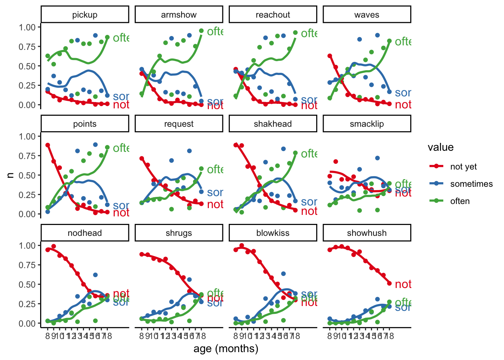
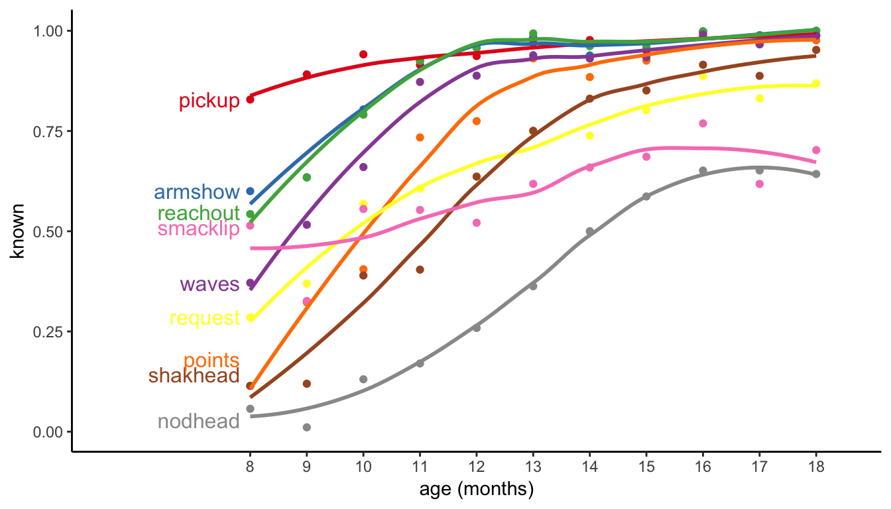
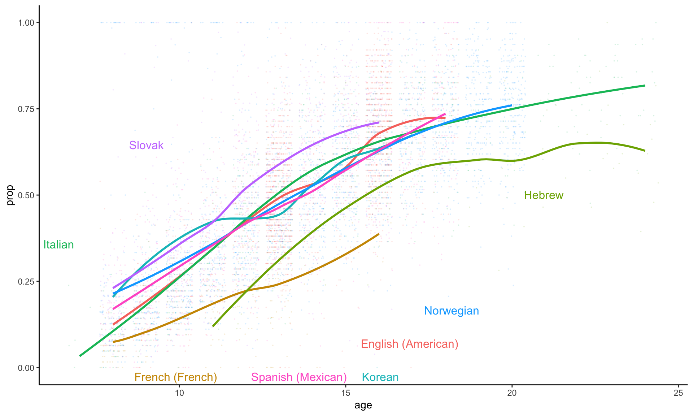
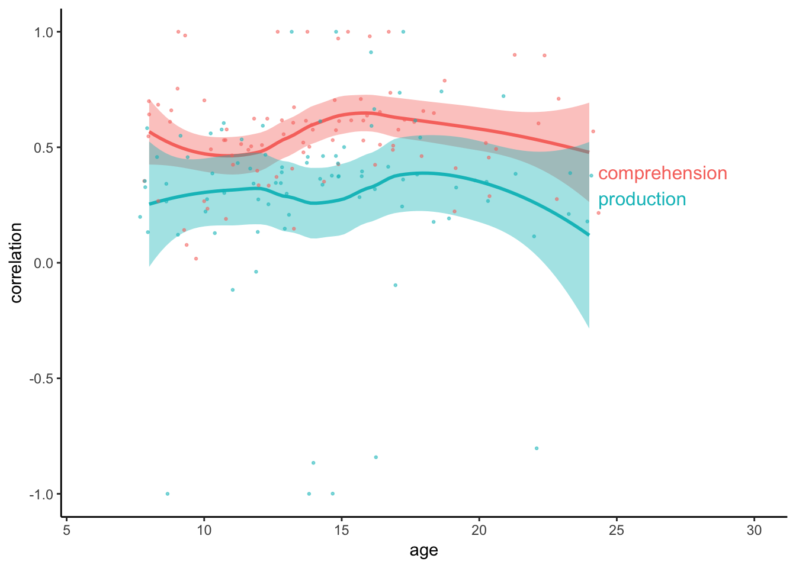
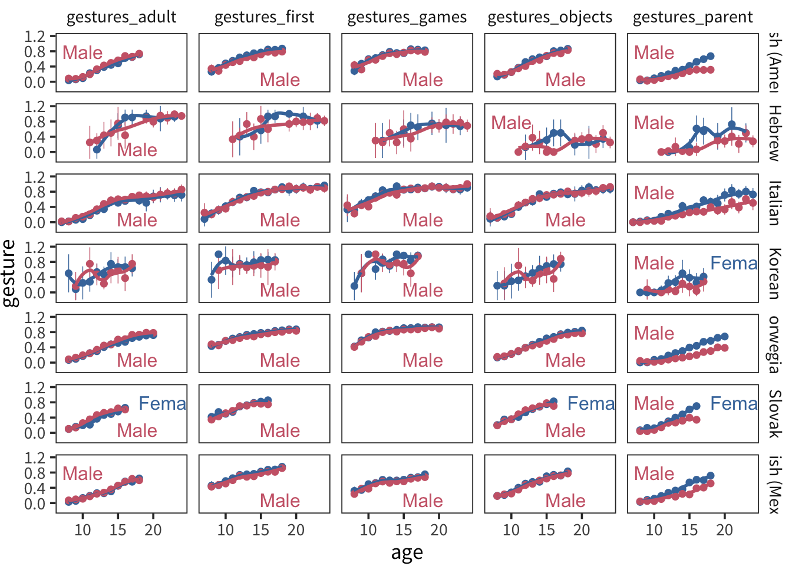
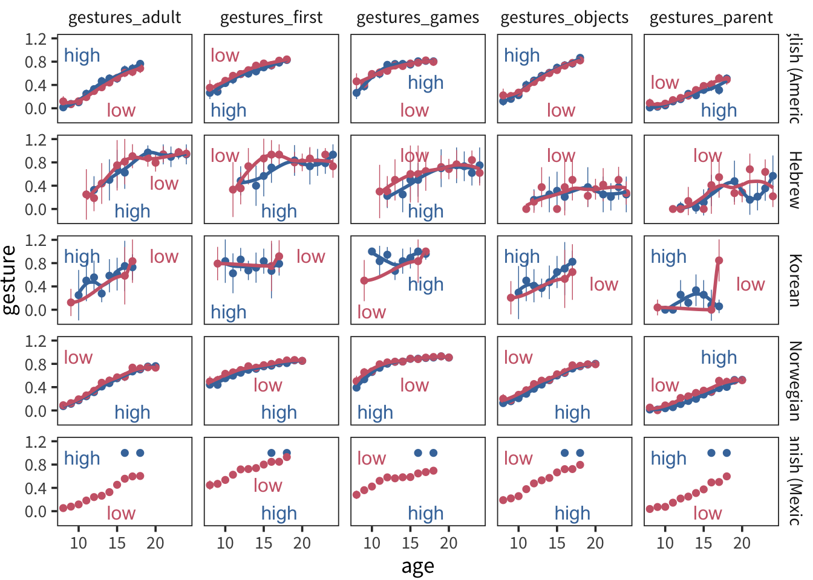

7 Gesture and Communication
While a child’s use of their first words is an exciting accomplishment indeed, it is clear that children communicate with their caregivers much earlier through the use of gestures. For example, a child who extends their hands and opens and closes their fist likely wants something. A child who points to a bird up in a tree likely wants to get their caregiver’s attention so that they can share in the delight together. Sometimes, children’s early vocalizations are accompanied by gestures, for example, a child might raise both of their hands in the air and says “up!” All of these examples show that gestures are an important early aspect of children’s communicative development.
Early gestures have long been thought to have a common mental status with later-developing linguistic accomplishments because both may reflect the child’s understanding of symbols, i.e., that a name or gesture can “stand in” for things in the world. The classic theories of (???) and (???) proposed that all symbols have their origins in actions carried out on objects and moreover, such symbols can be manifested in either the vocal or the gestural domain. These proposals suggest that there is a common underlying mental function that is critical to the development of all symbolic skills, applied in both language and certain types of gestures. In addition, these positions predict that there is developmental continuity between early gesture use and children’s later lexical and syntactic development (e.g., ???; ???). For example, children’s ability to point to distant objects is linked to the onset of the production of first words (L. Fenson et al. 2007), children with delayed onset of pointing are likely to also be delayed in first word production (ref), children’s early gesture use is correlated with their later comprehension abilities (Bates, Bretherton, and Snyder 1991), and children’s use of gestures in combinations with words is linked to the later production of multiword combinations (e.g., ???, (???)). These early correlational findings could simply reflect that children who use gestures are simply better at learning words. However, more recent studies have demonstrated specific links between early gesture use and later lexical and syntactic development (???). For example, the particular lexical items that enter a child’s vocabulary are likely to be names for objects that a labeled using a gesture several months earlier (???). Moreover, early gesture vocabulary is specifically linked to later word vocabulary, whereas, early gesture plus word combinations is linked specifically to children’s later word combination skills (???). These findings suggest that children’s early gestures provide an important social, communicative and linguistic foundation for later language development.
Early gestures serve many different functions. Children typically first begin to use “deictic gestures,” for example, giving, pointing, or showing (e.g., ???). Such deictic gestures are clear precursors to important linguistic and communicative functions, including establishing reference and promoting shared attention (Carpenter et al. 1998). However, these deictic gestures do not necessarily have symbolic content per se (i.e., they do not stand for objects in the world, ???). Early on, pointing gestures generally first serve an imperative function, e.g., to request something from an adult, whereas, later, pointing is more likely to direct a caregiver’s attention to another object or person (???; ???). Children might also use gestures as part of a social activity, for example, waving “bye bye” or signaling “all done.” At first, these might occur simply as imitations, but then later, a child may be able to produce these social gestures spontaneously in certain communicative contexts. Children’s social gestures also reflect children’s ability to engage in certain activities during pretend play, e.g., talking on a pretend phone or pretending to stir a soup. Such social gestures reflect children’s ability to tune into contextual cues, mentally reconstruct activities, and engage in sequences of events. Later, children’s gestures might take on a “true” symbolic meaning, as a child might use a conventional gesture to recognize or classify objects as an instance of a category (e.g., pretend to drink from a cup or sniff a flower). Studies have shown that children’s ability to use gestures in this symbolic way may reflect a common underlying “vocabulary” in both the verbal and gestural domain (e.g., ???; ???).
This chapter contains analysis of the “early gesture” items from the CDI. Our goals here are to examine the degree of cross-linguistic consistency and variability of reporting milestones like first pointing, as well as social routines like waving hi and playing peekaboo.
I can’t tell if sometimes/often really carries very much signal. It looks like it’s all over the place for the earliest gestures and almost overlapping for the latest ones. Let’s try compressing to a binary 
These look pretty reasonable to me, and a lot more stable. Also smacklip doesn’t seem to have much of any kind of trajectory, which makes me think that parents don’t know what do with it. For comparison, let’s try the other gesture categories.

Interesting, ok most of these look like they have some signal (with the exception maybe of sobig). Also some of them don’t look terribly different from the First Gestures.
Let’s try out some basic descriptives. What do these things look like? Let’s arrange them in order of difficulty(on the bases of highest proportion of non-producers).

- Intercorrelation among gestures
| language | mean | sd |
|---|---|---|
| English (American) | 0.6000678 | 0.1127009 |
| French (French) | 0.5604794 | 0.1775693 |
| Hebrew | 0.6047885 | 0.1405877 |
| Italian | 0.6815881 | 0.1035171 |
| Korean | 0.8391165 | 0.1289530 |
| Norwegian | 0.5715328 | 0.1102953 |
| Slovak | 0.6867094 | 0.0800928 |
| Spanish (Mexican) | 0.6684042 | 0.0865157 |
Reproduce intercorrelations among items found in Fenson et al. ~.6 in English and similar cross-linguistically
- Age and gesture
| language | gesture | comprehension | production |
|---|---|---|---|
| English (American) | 0.7341916 | 0.6041555 | 0.4584335 |
| French (French) | 0.5640004 | 0.3123690 | 0.2948552 |
| Hebrew | 0.6611960 | 0.6680370 | 0.6497745 |
| Italian | 0.8154434 | 0.7593678 | 0.6108468 |
| Korean | 0.5424071 | 0.6077974 | 0.4365702 |
| Norwegian | 0.7048041 | 0.7214761 | 0.5448999 |
| Slovak | 0.6605852 | 0.6586217 | 0.4963340 |
| Spanish (Mexican) | 0.7073324 | 0.5518957 | 0.3564280 |
Crosslingusitic plot

Gestures correlates more with comprehension than production
| language | comprehension | production |
|---|---|---|
| English (American) | 0.7498552 | 0.5254578 |
| French (French) | 0.6724663 | 0.3734622 |
| Hebrew | 0.7827125 | 0.6515282 |
| Italian | 0.8122385 | 0.4954399 |
| Korean | 0.5064364 | 0.4458949 |
| Norwegian | 0.6854243 | 0.5004506 |
| Slovak | 0.6273281 | 0.5355441 |
| Spanish (Mexican) | 0.7644320 | 0.5508311 |
This emerges around 12 months
| term | estimate | std.error | statistic |
|---|---|---|---|
| (Intercept) | 0.0010370 | 0.0449642 | 0.0230620 |
| value | 0.2327785 | 0.0453673 | 5.1309696 |
| measureproduction | -0.0013151 | 0.0636124 | -0.0206733 |
| age | -0.0001737 | 0.0031579 | -0.0550030 |
| value:measureproduction | 0.0671385 | 0.0641733 | 1.0462057 |
| value:age | 0.0183843 | 0.0031906 | 5.7620960 |
| measureproduction:age | 0.0002276 | 0.0044673 | 0.0509433 |
| value:measureproduction:age | -0.0143515 | 0.0045107 | -3.1816769 |

Type and sex. Small female advantage overall, but big interaction in gestures_parent 
| term | estimate | std.error | statistic |
|---|---|---|---|
| (Intercept) | 0.0822753 | 0.0393465 | 2.0910456 |
| age | 0.0435517 | 0.0010761 | 40.4714831 |
| sexMale | -0.0093326 | 0.0211085 | -0.4421254 |
| typegestures_games | 0.1540954 | 0.0171980 | 8.9600694 |
| typegestures_objects | -0.4324625 | 0.0165919 | -26.0647155 |
| typegestures_parent | -0.6217574 | 0.0167060 | -37.2176112 |
| typegestures_adult | -0.5510239 | 0.0166342 | -33.1259210 |
| age:sexMale | -0.0023130 | 0.0014774 | -1.5655850 |
| age:typegestures_games | -0.0072112 | 0.0012015 | -6.0018665 |
| age:typegestures_objects | 0.0204521 | 0.0011679 | 17.5116016 |
| age:typegestures_parent | 0.0185231 | 0.0011745 | 15.7706546 |
| age:typegestures_adult | 0.0188403 | 0.0011703 | 16.0993083 |
| sexMale:typegestures_games | -0.0376735 | 0.0237991 | -1.5829798 |
| sexMale:typegestures_objects | 0.0954669 | 0.0230257 | 4.1461079 |
| sexMale:typegestures_parent | 0.2317874 | 0.0232026 | 9.9896945 |
| sexMale:typegestures_adult | 0.0013823 | 0.0230858 | 0.0598777 |
| age:sexMale:typegestures_games | 0.0031025 | 0.0016525 | 1.8774217 |
| age:sexMale:typegestures_objects | -0.0060583 | 0.0016102 | -3.7625092 |
| age:sexMale:typegestures_parent | -0.0242447 | 0.0016206 | -14.9607226 |
| age:sexMale:typegestures_adult | 0.0057652 | 0.0016133 | 3.5734681 |
Type and ses. Very small low-ses advantage? 
| term | estimate | std.error | statistic |
|---|---|---|---|
| (Intercept) | -0.4971227 | 0.0506497 | -9.814913 |
| age | 0.0641691 | 0.0010536 | 60.904531 |
| typegestures_first | 0.5846613 | 0.0148309 | 39.421877 |
| typegestures_games | 0.7389647 | 0.0148462 | 49.774535 |
| typegestures_objects | 0.1288351 | 0.0148506 | 8.675445 |
| typegestures_parent | 0.0265412 | 0.0149765 | 1.772192 |
| seslow | -0.0199728 | 0.0197955 | -1.008956 |
| age:typegestures_first | -0.0256971 | 0.0009956 | -25.811273 |
| age:typegestures_games | -0.0295919 | 0.0009962 | -29.704336 |
| age:typegestures_objects | -0.0054288 | 0.0009966 | -5.447461 |
| age:typegestures_parent | -0.0171137 | 0.0010031 | -17.060553 |
| typegestures_first:seslow | 0.0680503 | 0.0068570 | 9.924270 |
| typegestures_games:seslow | -0.0537519 | 0.0068619 | -7.833382 |
| typegestures_objects:seslow | 0.0691165 | 0.0068620 | 10.072281 |
| typegestures_parent:seslow | 0.0949713 | 0.0069066 | 13.750873 |
| age:seslow | 0.0005230 | 0.0013199 | 0.396257 |
| term | estimate | std.error | statistic |
|---|---|---|---|
| item2sounds | 0.2055533 | 0.0393441 | 5.2245059 |
| item2games_routines | 0.1767668 | 0.0407363 | 4.3392933 |
| item1gestures_parent | 0.1188571 | 0.0393441 | 3.0209664 |
| (Intercept) | 0.2069691 | 0.0706603 | 2.9290705 |
| item2people | 0.1102143 | 0.0393441 | 2.8012947 |
| item1gestures_parent:item2prepositions | -0.2736652 | 0.1180322 | -2.3185635 |
| item2toys | 0.0907670 | 0.0393441 | 2.3070063 |
| item2food_drink | 0.0874615 | 0.0393441 | 2.2229908 |
| item1gestures_adult | 0.0811801 | 0.0393441 | 2.0633380 |
| item2prepositions | 0.1633595 | 0.0836441 | 1.9530312 |
| item1gestures_parent:item2games_routines | -0.1064704 | 0.0575938 | -1.8486431 |
| item2outside_places | 0.1486401 | 0.0836441 | 1.7770544 |
| item2states | -0.1379187 | 0.0836349 | -1.6490563 |
| item1gestures_parent:item2sounds | -0.0780449 | 0.0556409 | -1.4026537 |
| item2body_parts | 0.0518744 | 0.0393441 | 1.3184805 |
| item2time_words | -0.0537577 | 0.0425176 | -1.2643636 |
| item2verb_endings | 0.0990991 | 0.0836587 | 1.1845640 |
| item1gestures_adult:item2states | 0.1383388 | 0.1180322 | 1.1720429 |
| item2animals | 0.0441445 | 0.0393441 | 1.1220114 |
| item1gestures_adult:item2articles | 0.1279285 | 0.1180322 | 1.0838441 |
| item1gestures_objects:item2games_routines | -0.0615063 | 0.0575938 | -1.0679314 |
| item1gestures_objects:item2prepositions | -0.1253267 | 0.1180322 | -1.0618006 |
| item2articles | -0.0858567 | 0.0836349 | -1.0265651 |
| item2clothing | 0.0386469 | 0.0393441 | 0.9822795 |
| item1gestures_games:item2states | 0.1089573 | 0.1185036 | 0.9194435 |
| item1gestures_adult:item2games_routines | -0.0512646 | 0.0575938 | -0.8901062 |
| item1gestures_games:item2prepositions | -0.1033768 | 0.1185036 | -0.8723521 |
| item1gestures_games:item2articles | 0.1018144 | 0.1185036 | 0.8591670 |
| item1gestures_parent:item2outside_places | 0.1013857 | 0.1180322 | 0.8589665 |
| item1gestures_parent:item2people | -0.0472167 | 0.0556409 | -0.8485960 |
| item1gestures_objects | 0.0329548 | 0.0393441 | 0.8376057 |
| item1gestures_games:item2outside_places | -0.0967706 | 0.1185036 | -0.8166054 |
| item1gestures_adult:item2locations | 0.0461887 | 0.0600991 | 0.7685427 |
| item1gestures_games:item2games_routines | -0.0439969 | 0.0585537 | -0.7513944 |
| item2pronouns | 0.0281519 | 0.0393441 | 0.7155304 |
| item1gestures_parent:item2states | 0.0837889 | 0.1180322 | 0.7098820 |
| item1gestures_adult:item2prepositions | -0.0807338 | 0.1180322 | -0.6839983 |
| item1gestures_objects:item2locations | 0.0409972 | 0.0600991 | 0.6821611 |
| item2locations | -0.0281733 | 0.0425142 | -0.6626791 |
| item1gestures_parent:item2descriptive_words | 0.0358334 | 0.0556409 | 0.6440121 |
| item1gestures_parent:item2food_drink | -0.0355436 | 0.0556409 | -0.6388035 |
| item1gestures_parent:item2vehicles | -0.0355281 | 0.0556409 | -0.6385256 |
| item1gestures_parent:item2articles | 0.0749617 | 0.1180322 | 0.6350950 |
| item1gestures_adult:item2verb_endings | -0.0747081 | 0.1180322 | -0.6329465 |
| item1gestures_parent:item2toys | -0.0349726 | 0.0556409 | -0.6285407 |
| item2question_words | -0.0267101 | 0.0425176 | -0.6282123 |
| item1gestures_parent:item2body_parts | -0.0348664 | 0.0556409 | -0.6266328 |
| item1gestures_parent:item2locations | 0.0366489 | 0.0600991 | 0.6098075 |
| item1gestures_objects:item2states | 0.0682790 | 0.1180322 | 0.5784775 |
| item1gestures_objects:item2question_words | -0.0340075 | 0.0600991 | -0.5658578 |
| item1gestures_parent:item2quantifiers | -0.0322502 | 0.0575938 | -0.5599589 |
| item1gestures_parent:item2question_words | -0.0328145 | 0.0600991 | -0.5460068 |
| item2vehicles | 0.0206456 | 0.0393441 | 0.5247443 |
| item1gestures_parent:item2clothing | -0.0272766 | 0.0556409 | -0.4902256 |
| item1gestures_parent:item2time_words | -0.0294160 | 0.0600991 | -0.4894579 |
| item1gestures_parent:item2outside | -0.0267879 | 0.0556409 | -0.4814417 |
| item1gestures_objects:item2articles | 0.0536386 | 0.1180322 | 0.4544404 |
| item2sounds:measureproduces | -0.0240223 | 0.0556409 | -0.4317378 |
| item1gestures_games | -0.0175679 | 0.0407363 | -0.4312597 |
| item1gestures_parent:item2verb_endings | -0.0506023 | 0.1180322 | -0.4287162 |
| item1gestures_parent:item2furniture_rooms | -0.0233674 | 0.0556409 | -0.4199680 |
| item1gestures_adult:item2question_words | -0.0251632 | 0.0600991 | -0.4186947 |
| item1gestures_adult:item2household | 0.0228348 | 0.0556409 | 0.4103951 |
| item1gestures_objects:item2body_parts | -0.0211381 | 0.0556409 | -0.3799019 |
| item1gestures_games:item2pronouns | 0.0209520 | 0.0575938 | 0.3637891 |
| item1gestures_adult:item2descriptive_words | 0.0196489 | 0.0556409 | 0.3531374 |
| item1gestures_games:item2time_words | 0.0213022 | 0.0610196 | 0.3491041 |
| item1gestures_adult:item2vehicles | 0.0193132 | 0.0556409 | 0.3471036 |
| item1gestures_objects:item2sounds | 0.0181226 | 0.0556409 | 0.3257061 |
| item1gestures_objects:item2animals | 0.0177848 | 0.0556409 | 0.3196349 |
| item1gestures_objects:item2descriptive_words | 0.0175914 | 0.0556409 | 0.3161593 |
| item2furniture_rooms | -0.0123519 | 0.0393441 | -0.3139444 |
| item2locations:measureproduces | -0.0187204 | 0.0600991 | -0.3114927 |
| item2prepositions:measureproduces | 0.0365309 | 0.1180322 | 0.3094996 |
| item1gestures_adult:item2quantifiers | -0.0170303 | 0.0575938 | -0.2956974 |
| item1gestures_objects:item2places | 0.0251968 | 0.0879760 | 0.2864052 |
| item1gestures_adult:item2animals | 0.0154024 | 0.0556409 | 0.2768173 |
| item1gestures_objects:item2people | 0.0150668 | 0.0556409 | 0.2707865 |
| measureproduces | 0.0105723 | 0.0393441 | 0.2687134 |
| item1gestures_adult:item2body_parts | -0.0146370 | 0.0556409 | -0.2630623 |
| item2quantifiers | -0.0106888 | 0.0407363 | -0.2623900 |
| item2quantifiers:measureproduces | -0.0144564 | 0.0575938 | -0.2510060 |
| item1gestures_objects:item2quantifiers | -0.0133078 | 0.0575938 | -0.2310634 |
| item2clothing:measureproduces | -0.0126681 | 0.0556409 | -0.2276758 |
| item2question_words:measureproduces | -0.0130782 | 0.0600991 | -0.2176106 |
| item1gestures_adult:item2pronouns | 0.0119780 | 0.0556409 | 0.2152741 |
| item1gestures_games:item2locations | 0.0134379 | 0.0626819 | 0.2143823 |
| item2time_words:measureproduces | -0.0127555 | 0.0600991 | -0.2122408 |
| item2household:measureproduces | -0.0116115 | 0.0556409 | -0.2086871 |
| item2games_routines:measureproduces | -0.0118325 | 0.0575938 | -0.2054482 |
| item1gestures_objects:item2vehicles | 0.0113159 | 0.0556409 | 0.2033729 |
| item2people:measureproduces | -0.0110734 | 0.0556409 | -0.1990158 |
| item1gestures_parent:measureproduces | -0.0109379 | 0.0556409 | -0.1965806 |
| item1gestures_objects:item2verb_endings | -0.0220948 | 0.1180322 | -0.1871931 |
| item1gestures_games:item2quantifiers | -0.0109351 | 0.0585537 | -0.1867535 |
| item1gestures_games:item2people | 0.0103773 | 0.0575938 | 0.1801813 |
| item1gestures_adult:measureproduces | -0.0097888 | 0.0556409 | -0.1759272 |
| item2furniture_rooms:measureproduces | -0.0095279 | 0.0556409 | -0.1712397 |
| item2outside:measureproduces | -0.0092930 | 0.0556409 | -0.1670170 |
| item1gestures_adult:item2food_drink | 0.0092773 | 0.0556409 | 0.1667355 |
| item1gestures_objects:measureproduces | -0.0088842 | 0.0556409 | -0.1596694 |
| item1gestures_objects:item2outside | 0.0088126 | 0.0556409 | 0.1583829 |
| item2animals:measureproduces | -0.0087527 | 0.0556409 | -0.1573063 |
| item2descriptive_words | 0.0060468 | 0.0393441 | 0.1536908 |
| item2pronouns:measureproduces | -0.0085468 | 0.0556409 | -0.1536056 |
| item2vehicles:measureproduces | -0.0085059 | 0.0556409 | -0.1528711 |
| item2descriptive_words:measureproduces | -0.0081528 | 0.0556409 | -0.1465254 |
| item1gestures_objects:item2time_words:measureproduces | 0.0121125 | 0.0849929 | 0.1425120 |
| item2body_parts:measureproduces | -0.0078571 | 0.0556409 | -0.1412114 |
| item1gestures_parent:item2prepositions:measureproduces | -0.0231605 | 0.1669228 | -0.1387500 |
| item1gestures_parent:item2people:measureproduces | -0.0109140 | 0.0786881 | -0.1386996 |
| item1gestures_parent:item2pronouns:measureproduces | -0.0108090 | 0.0786881 | -0.1373651 |
| item1gestures_games:item2clothing | 0.0076115 | 0.0575938 | 0.1321582 |
| item1gestures_objects:item2clothing:measureproduces | 0.0103353 | 0.0786881 | 0.1313455 |
| item1gestures_games:item2time_words:measureproduces | 0.0112240 | 0.0862840 | 0.1300816 |
| item1gestures_games:item2verb_endings | 0.0151814 | 0.1185036 | 0.1281094 |
| item1gestures_adult:item2places | -0.0112183 | 0.0879760 | -0.1275155 |
| item1gestures_parent:item2time_words:measureproduces | 0.0108137 | 0.0849929 | 0.1272301 |
| item1gestures_games:item2outside | 0.0072465 | 0.0575938 | 0.1258206 |
| item1gestures_games:item2question_words | 0.0076774 | 0.0610196 | 0.1258183 |
| item1gestures_games:item2locations:measureproduces | 0.0111332 | 0.0886438 | 0.1255943 |
| item1gestures_objects:item2pronouns | 0.0068997 | 0.0556409 | 0.1240048 |
| item1gestures_objects:item2food_drink | 0.0068193 | 0.0556409 | 0.1225583 |
| item1gestures_adult:item2time_words:measureproduces | 0.0103382 | 0.0849929 | 0.1216361 |
| item2places:measureproduces | -0.0105037 | 0.0879760 | -0.1193926 |
| item1gestures_games:measureproduces | -0.0067435 | 0.0575938 | -0.1170867 |
| item1gestures_objects:item2quantifiers:measureproduces | 0.0094089 | 0.0814500 | 0.1155172 |
| item1gestures_objects:item2household | 0.0064128 | 0.0556409 | 0.1152538 |
| item1gestures_games:item2question_words:measureproduces | 0.0099358 | 0.0862840 | 0.1151526 |
| item1gestures_adult:item2clothing:measureproduces | 0.0090081 | 0.0786881 | 0.1144787 |
| item1gestures_games:item2clothing:measureproduces | 0.0092028 | 0.0814500 | 0.1129870 |
| item1gestures_games:item2toys | -0.0063736 | 0.0575938 | -0.1106652 |
| item1gestures_objects:item2descriptive_words:measureproduces | 0.0085426 | 0.0786881 | 0.1085626 |
| item1gestures_games:item2sounds:measureproduces | 0.0087869 | 0.0814500 | 0.1078809 |
| item1gestures_adult:item2question_words:measureproduces | 0.0091404 | 0.0849929 | 0.1075426 |
| item1gestures_objects:item2furniture_rooms | -0.0058165 | 0.0556409 | -0.1045357 |
| item1gestures_objects:item2outside_places | 0.0122224 | 0.1180322 | 0.1035512 |
| item1gestures_games:item2body_parts | -0.0058351 | 0.0575938 | -0.1013154 |
| item1gestures_games:item2furniture_rooms | 0.0058000 | 0.0575938 | 0.1007055 |
| item1gestures_games:item2vehicles | 0.0057779 | 0.0575938 | 0.1003222 |
| item1gestures_games:item2descriptive_words | 0.0057554 | 0.0575938 | 0.0999310 |
| item1gestures_games:item2vehicles:measureproduces | 0.0081231 | 0.0814500 | 0.0997310 |
| item1gestures_objects:item2furniture_rooms:measureproduces | 0.0078157 | 0.0786881 | 0.0993252 |
| item1gestures_adult:item2furniture_rooms:measureproduces | 0.0077779 | 0.0786881 | 0.0988441 |
| item1gestures_objects:item2body_parts:measureproduces | 0.0077764 | 0.0786881 | 0.0988257 |
| item1gestures_adult:item2outside:measureproduces | 0.0077551 | 0.0786881 | 0.0985548 |
| item1gestures_parent:item2household:measureproduces | 0.0076318 | 0.0786881 | 0.0969877 |
| item2outside_places:measureproduces | -0.0113585 | 0.1180322 | -0.0962320 |
| item1gestures_adult:item2body_parts:measureproduces | 0.0074713 | 0.0786881 | 0.0949481 |
| item1gestures_parent:item2clothing:measureproduces | 0.0074512 | 0.0786881 | 0.0946923 |
| item2outside | -0.0037157 | 0.0393441 | -0.0944420 |
| item1gestures_games:item2household:measureproduces | 0.0074164 | 0.0814500 | 0.0910545 |
| item1gestures_games:item2furniture_rooms:measureproduces | 0.0073767 | 0.0814500 | 0.0905676 |
| item1gestures_objects:item2outside:measureproduces | 0.0071166 | 0.0786881 | 0.0904410 |
| item1gestures_games:item2quantifiers:measureproduces | 0.0074805 | 0.0827963 | 0.0903482 |
| item1gestures_objects:item2vehicles:measureproduces | 0.0071012 | 0.0786881 | 0.0902447 |
| item2articles:measureproduces | -0.0105723 | 0.1180322 | -0.0895711 |
| item2verb_endings:measureproduces | -0.0105723 | 0.1180322 | -0.0895711 |
| item2states:measureproduces | -0.0105723 | 0.1180322 | -0.0895711 |
| item1gestures_parent:item2pronouns | -0.0048719 | 0.0556409 | -0.0875597 |
| item1gestures_games:item2household | 0.0050351 | 0.0575938 | 0.0874241 |
| item1gestures_adult:item2descriptive_words:measureproduces | 0.0068580 | 0.0786881 | 0.0871541 |
| item1gestures_objects:item2question_words:measureproduces | 0.0073463 | 0.0849929 | 0.0864342 |
| item1gestures_parent:item2furniture_rooms:measureproduces | 0.0067882 | 0.0786881 | 0.0862668 |
| item1gestures_adult:item2animals:measureproduces | 0.0067385 | 0.0786881 | 0.0856355 |
| item1gestures_parent:item2body_parts:measureproduces | 0.0067335 | 0.0786881 | 0.0855717 |
| item1gestures_adult:item2clothing | -0.0047365 | 0.0556409 | -0.0851254 |
| item1gestures_parent:item2places:measureproduces | -0.0105600 | 0.1244169 | -0.0848760 |
| item1gestures_parent:item2locations:measureproduces | -0.0071968 | 0.0849929 | -0.0846753 |
| item1gestures_parent:item2vehicles:measureproduces | 0.0066269 | 0.0786881 | 0.0842169 |
| item1gestures_games:item2descriptive_words:measureproduces | 0.0068454 | 0.0814500 | 0.0840441 |
| item1gestures_games:item2games_routines:measureproduces | 0.0069549 | 0.0827963 | 0.0840004 |
| item1gestures_adult:item2toys | -0.0046438 | 0.0556409 | -0.0834606 |
| item1gestures_games:item2outside:measureproduces | 0.0063954 | 0.0814500 | 0.0785190 |
| item1gestures_adult:item2furniture_rooms | -0.0043651 | 0.0556409 | -0.0784514 |
| item1gestures_parent:item2outside:measureproduces | 0.0061689 | 0.0786881 | 0.0783965 |
| item1gestures_games:item2people:measureproduces | 0.0063526 | 0.0814500 | 0.0779937 |
| item1gestures_objects:item2animals:measureproduces | 0.0060797 | 0.0786881 | 0.0772636 |
| item1gestures_parent:item2animals | -0.0042023 | 0.0556409 | -0.0755247 |
| item1gestures_objects:item2food_drink:measureproduces | 0.0059370 | 0.0786881 | 0.0754494 |
| item1gestures_adult:item2vehicles:measureproduces | 0.0058954 | 0.0786881 | 0.0749205 |
| item1gestures_adult:item2household:measureproduces | 0.0057989 | 0.0786881 | 0.0736947 |
| item1gestures_objects:item2places:measureproduces | 0.0090897 | 0.1244169 | 0.0730586 |
| item1gestures_adult:item2outside | 0.0040360 | 0.0556409 | 0.0725364 |
| item1gestures_objects:item2household:measureproduces | 0.0056885 | 0.0786881 | 0.0722918 |
| item1gestures_games:item2animals:measureproduces | 0.0057917 | 0.0814500 | 0.0711075 |
| item1gestures_adult:item2sounds | 0.0039524 | 0.0556409 | 0.0710338 |
| item1gestures_adult:item2outside_places | -0.0083553 | 0.1180322 | -0.0707880 |
| item1gestures_adult:item2food_drink:measureproduces | 0.0054558 | 0.0786881 | 0.0693345 |
| item1gestures_adult:item2quantifiers:measureproduces | 0.0054009 | 0.0814500 | 0.0663091 |
| item1gestures_parent:item2outside_places:measureproduces | 0.0110397 | 0.1669228 | 0.0661364 |
| item1gestures_games:item2prepositions:measureproduces | -0.0110187 | 0.1675838 | -0.0657504 |
| item1gestures_parent:item2articles:measureproduces | 0.0109379 | 0.1669228 | 0.0655269 |
| item1gestures_parent:item2verb_endings:measureproduces | 0.0109379 | 0.1669228 | 0.0655269 |
| item1gestures_parent:item2states:measureproduces | 0.0109379 | 0.1669228 | 0.0655269 |
| item2toys:measureproduces | -0.0035507 | 0.0556409 | -0.0638146 |
| item2household | 0.0025000 | 0.0393441 | 0.0635409 |
| item1gestures_games:item2body_parts:measureproduces | 0.0051181 | 0.0814500 | 0.0628376 |
| item1gestures_adult:item2sounds:measureproduces | 0.0048983 | 0.0786881 | 0.0622493 |
| item1gestures_games:item2places:measureproduces | 0.0075477 | 0.1253024 | 0.0602357 |
| item1gestures_adult:item2outside_places:measureproduces | 0.0099531 | 0.1669228 | 0.0596272 |
| item1gestures_adult:item2articles:measureproduces | 0.0097888 | 0.1669228 | 0.0586424 |
| item1gestures_adult:item2verb_endings:measureproduces | 0.0097888 | 0.1669228 | 0.0586424 |
| item1gestures_adult:item2states:measureproduces | 0.0097888 | 0.1669228 | 0.0586424 |
| item1gestures_parent:item2quantifiers:measureproduces | -0.0046659 | 0.0814500 | -0.0572851 |
| item1gestures_objects:item2sounds:measureproduces | 0.0043746 | 0.0786881 | 0.0555940 |
| item1gestures_objects:item2toys:measureproduces | 0.0043198 | 0.0786881 | 0.0548975 |
| item1gestures_parent:item2sounds:measureproduces | 0.0042284 | 0.0786881 | 0.0537363 |
| item1gestures_objects:item2outside_places:measureproduces | 0.0089548 | 0.1669228 | 0.0536462 |
| item1gestures_objects:item2articles:measureproduces | 0.0088842 | 0.1669228 | 0.0532231 |
| item1gestures_objects:item2verb_endings:measureproduces | 0.0088842 | 0.1669228 | 0.0532231 |
| item1gestures_objects:item2states:measureproduces | 0.0088842 | 0.1669228 | 0.0532231 |
| item1gestures_parent:item2games_routines:measureproduces | -0.0040097 | 0.0814500 | -0.0492290 |
| item1gestures_parent:item2household | -0.0027025 | 0.0556409 | -0.0485703 |
| item1gestures_games:item2sounds | -0.0027530 | 0.0575938 | -0.0478004 |
| item1gestures_games:item2food_drink:measureproduces | 0.0037823 | 0.0814500 | 0.0464367 |
| item1gestures_parent:item2descriptive_words:measureproduces | 0.0036298 | 0.0786881 | 0.0461296 |
| item1gestures_parent:item2question_words:measureproduces | 0.0038277 | 0.0849929 | 0.0450351 |
| item1gestures_games:item2food_drink | -0.0024638 | 0.0575938 | -0.0427782 |
| item1gestures_games:item2outside_places:measureproduces | 0.0069886 | 0.1675838 | 0.0417020 |
| item1gestures_adult:item2people | -0.0022455 | 0.0556409 | -0.0403573 |
| item1gestures_games:item2articles:measureproduces | 0.0067435 | 0.1675838 | 0.0402394 |
| item1gestures_games:item2verb_endings:measureproduces | 0.0067435 | 0.1675838 | 0.0402394 |
| item1gestures_games:item2states:measureproduces | 0.0067435 | 0.1675838 | 0.0402394 |
| item1gestures_objects:item2prepositions:measureproduces | -0.0066955 | 0.1669228 | -0.0401112 |
| item1gestures_games:item2toys:measureproduces | 0.0032228 | 0.0814500 | 0.0395677 |
| item2places | -0.0024576 | 0.0623168 | -0.0394373 |
| item1gestures_adult:item2time_words | 0.0023309 | 0.0600991 | 0.0387839 |
| item1gestures_games:item2places | 0.0033866 | 0.0886074 | 0.0382200 |
| item1gestures_games:item2pronouns:measureproduces | 0.0030568 | 0.0814500 | 0.0375292 |
| item1gestures_parent:item2animals:measureproduces | 0.0026631 | 0.0786881 | 0.0338441 |
| item1gestures_adult:item2places:measureproduces | 0.0040999 | 0.1244169 | 0.0329527 |
| item1gestures_parent:item2toys:measureproduces | -0.0024289 | 0.0786881 | -0.0308679 |
| item1gestures_objects:item2clothing | -0.0016343 | 0.0556409 | -0.0293726 |
| item1gestures_objects:item2time_words | -0.0016724 | 0.0600991 | -0.0278279 |
| item2food_drink:measureproduces | 0.0014463 | 0.0556409 | 0.0259932 |
| item1gestures_adult:item2toys:measureproduces | 0.0019520 | 0.0786881 | 0.0248065 |
| item1gestures_objects:item2games_routines:measureproduces | 0.0020128 | 0.0814500 | 0.0247124 |
| item1gestures_adult:item2people:measureproduces | -0.0019406 | 0.0786881 | -0.0246620 |
| item1gestures_adult:item2prepositions:measureproduces | -0.0032412 | 0.1669228 | -0.0194174 |
| item1gestures_objects:item2locations:measureproduces | 0.0014381 | 0.0849929 | 0.0169207 |
| item1gestures_adult:item2games_routines:measureproduces | 0.0013517 | 0.0814500 | 0.0165949 |
| item1gestures_parent:item2places | -0.0013303 | 0.0879760 | -0.0151210 |
| item1gestures_parent:item2food_drink:measureproduces | 0.0010805 | 0.0786881 | 0.0137315 |
| item1gestures_adult:item2locations:measureproduces | -0.0010317 | 0.0849929 | -0.0121385 |
| item1gestures_games:item2animals | -0.0006706 | 0.0575938 | -0.0116432 |
| item1gestures_objects:item2pronouns:measureproduces | -0.0006960 | 0.0786881 | -0.0088451 |
| item1gestures_objects:item2people:measureproduces | 0.0004779 | 0.0786881 | 0.0060731 |
| item1gestures_objects:item2toys | -0.0002771 | 0.0556409 | -0.0049798 |
| item1gestures_adult:item2pronouns:measureproduces | -0.0001145 | 0.0786881 | -0.0014545 |